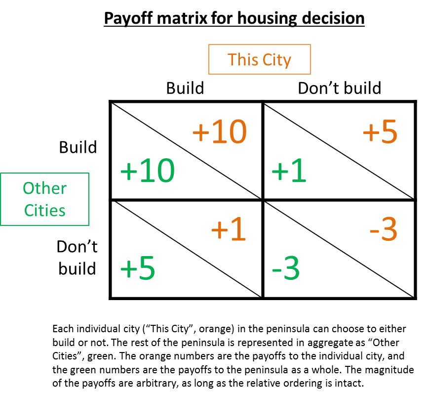
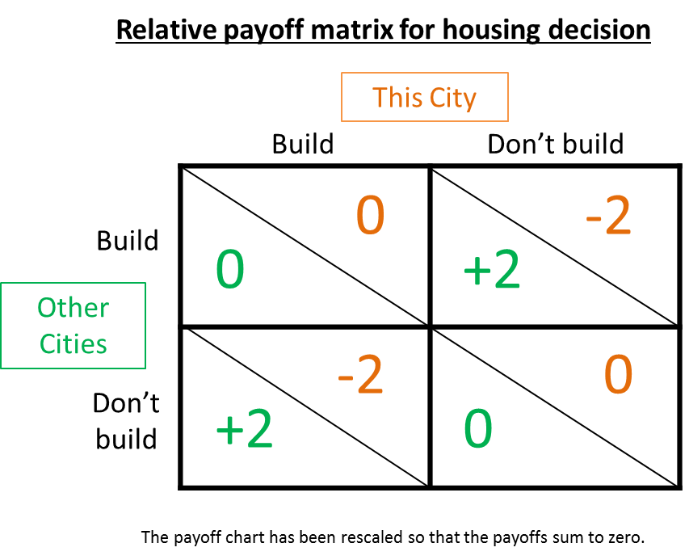

"I don't know why they still building houses," Mr Biswas said. "Nobody don't want a house these days. They just want a coal barrel. One coal barrel for one person. Whenever a baby born just get another coal barrel. You wouldn't see any houses anywhere then. Just a yard with five or six coal barrels standing up in two or three rows."- V.S. Naipaul, A House for Mr Biswas
Housing supply is a problem in cities all over the world. What are good frameworks for understanding and solving it?
The housing crisis
The price of housing in major cities around the world has been rising relentlessly in the past decades. Two of the major reasons are a prolonged period of low interest rates, and agglomeration effects of being situated within a large city.
To understand the causes of high housing prices, an economics framework is necessary. Low interest rates mean that the cost of a mortgage is low, so people can afford to pay more to buy a house or apartment. For example, with mortgage rates at 6%, a monthly payment of $1,000 on a 30-year mortgage could pay for a $168,000 loan. At 3%, though, it could pay for a $237,000 loan, so the buyer can get a 40% more expensive property for the same monthly payment.
Secondly, agglomeration effects have been increasing, as the modern economy requires increasing specialization.[1] Agglomeration economies are the benefits that come when firms and people locate near one another together in cities and industrial clusters. They enable increased specialization and higher rates of knowledge transfer.
These factors lead to an increase in demand for housing. High housing prices, by themselves, are not indicative of a housing crisis – we'd expect housing to be more expensive if it was more valuable. And in most areas of the United States there is no housing problem, with housing costs roughly in line with construction costs. The housing crisis in some cities is caused by restrictions on supply: these cities make it difficult to create new housing stock.
To tackle the housing crisis, an economics framework is necessary but not sufficient. The application of economic theory to housing supply has already been tried repeatedly, and if relying on economics was sufficient, we wouldn't be seeing so many problems. Instead, I think we can use the unconventional but interesting framework of international relations.
International relations
A realist framework is useful because the constraint on housing in affected cities is almost never the cost of construction materials or availability of land. The constraint is the presence of stakeholders who are affected by new housing supply. Housing is not a physical or economic problem, it is a political problem. Therefore, it requires a political response.
The obvious cause is the existence of vested interests (also known as interest groups), from the fields of economics and political economy.[2] This is primarily the existing homeowners. They enjoy a direct benefit from high housing prices, because it makes their homes or apartments more valuable. They are incentivized to protect their high housing prices, which often form the majority of their savings. The elderly, especially, can spend large amounts of time and effort on lobbying. The benefits of increased housing supply are spread over a large population and include those with no voice, such as people who would potentially move in if housing was cheaper. This means that a minority of people can prevent the majority from benefitting.
This explanation is correct, but how useful is it really? What actual solutions does this analysis suggest, except for overcoming vested interests with brute force, an approach which is both costly and comes with dangerous side-effects?
The Bay Area
Vested interests do block new housing construction, but this is neither a complete nor useful explanation. What we need is a deeper understanding of international relations.[3] Here's an example of where the vested interests model doesn't show the full picture: the San Francisco Greater Bay Area.

My friend, Bob (a pseudonym), lives in the Greater Bay Area and is puzzled by the lack of housing construction. He models the situation like this:
There are 20 cities in the Peninsula. Each city can choose to build housing or not. If a city builds housing, the entire peninsula benefits, although the city that built the housing would benefit less than the others.
For example, a city that builds housing will receive less state money than if it built hotels or commercial properties[4], but cities elsewhere in the area benefit as it relieves the housing pressure on them.
Using game theory, we can show the payoff diagrams like this:
With these payoffs, everyone benefits from increased housing. Any city can unilaterally choose to build housing even if other cities refuse, and get a payoff of +1 while other cities get +5. Based on these payoffs, Bob predicted that at least one city would build new housing.
However, I expected none of the cities to build significant amounts of housing. Bob thought this was because the vested interests were so strong in every single city that none of them could be overcome. But that wasn't the model I was using. I was thinking about another idea from international relations: relative gains[5].
Relative gains
Relative gains means that instead of viewing the world as a positive-sum game, we view it as a zero sum game. If the Greeks and Persians are at war, for example, then what matters isn't the absolute amount of power they each have, but their relative gains. If a new type of bow is invented with greater range and power, both the Greek and Persian armies will be stronger in an absolute sense. But in a relative sense, the Persians will be more powerful since their army composition places more importance on archery.[6]
In this type of situation, if one country gains power but the rest of the world gains more, that country has fallen behind. Actions which benefit you but benefit an enemy more can be fatal.
Because of the particulars of how power is devolved in this region, the cities in the Peninsula are locked in just this type of situation. For small changes in housing supply, relative changes matter more than absolute changes. A city that built housing would be less prosperous relative to the Bay Area region, because the other cities could free ride on the increased housing stock. This would lead to widespread dissatisfaction within that city, and opposition to further construction.
With this perspective, the payoff diagram looks like this:
Any city that chooses to build would be hurting itself by getting a payoff of -2, while other cities would get +2. Even if every city chooses to build housing, no one gains anything at all. We'd expect the equilibrium to quickly settle into the bottom right quadrant.[7] And indeed, in 2017 only one home was added for every four people who moved to California, similar to the pattern in previous years.
Where housing does get built
This doesn't mean that the situation is hopeless. There are fast-growing cities in the world where sufficient housing does get built. These cities manage to deal with one or both of the problems of vested interests and relative gains.
In Tokyo, vested interests also exist, but housing gets built. The barriers to new housing is low, because land use zoning happens on a national level instead of at the city level, removing a major reason for inter-city competition. The relative competition also happens at the national level, with a mindset of something like "we'll fall behind to China if we hamstring ourselves". Also, vested interests are less powerful due to high Japanese cultural homogeneity, which de-emphasizes individual benefit and emphasizes group interest.
China has experienced unprecedented levels of rural-urban migration for decades. Housing prices have risen over time, but this is due to the relentless pace of urbanization and the concomitant demand for housing. On the supply side, large amounts of new housing are being created every day.
Both vested interests and relative competition are weak. The cost to homeowners of opposing new construction is high, because the government is suspicious of organized advocacy groups and local governments profit from property development. Therefore, vested interests can be effectively suppressed. As for relative competition, although implementation details are often decided at the city level, government policy is propagated top-down at the prefecture level, causing the competition to happen higher up.[8]
Australia is another example of a successful approach to housing. True, looking at housing affordability wouldn't indicate this – Sydney and Melbourne are in the top 10 of the most unaffordable cities worldwide. But they have been dealt a weak hand – Australia has a population growth of 1.6% per year, of which more than 60% came from immigration. Immigrants are often seen as outsiders, and so they tend to increase the power of vested interests.
In the face of these headwinds, Australia managed to come up with a reasonably good policy that satisfies vested interests. They banned foreign ownership of existing housing stock, but not ownership of new housing stock. This meant that the demand for housing was channeled into building new homes. Because these are seen by existing homeowners as separate markets, they largely accept the new construction. This means that Australian cities do not need to compete with each other to restrict housing supply.[9]
New solutions
The value of brainstorming is that it reveals additional ways of achieving our goals. If we only thought along the lines of vested interests, we would look for ways to overpower the vested interests. That's a direct but obvious route, and we'd expect the vested interests to be well prepared and have a high force multiplier working in their favor.
But using the relative gains concept, we can think of different solutions. We could try to move the group competition up a level, so that the entire Bay Area is competing with rival conurbations.[10] Another approach would be to increase the power of rivals, which will force more cooperation on the Bay Area level.[11]
There are many other effective approaches for increasing housing supply in the Bay Area; the specific policies and implementations aren't important. What's important is that in order to come up with these solutions, we need to know which frameworks are appropriate to apply, and to have enough familiarity with them to look beyond the surface level and come up with new possibilities.
Generalizing
We can improve our decision-making by taking this example and transforming it into a general mindset. There are three important questions to resolve when we do this:
- How can we know how deep our understanding is – are we suffering from the Dunning-Kruger effect?
- When can we know which frameworks are appropriate to apply to a particular situation?
- How can we increase our understanding of our various frameworks to a level where they add value?
The conventional approach is to read a lot, and to talk to a lot of knowledgeable people in each field. Not surprisingly, this is so difficult to do that the average level of decision-making is quite poor. Few people have the stamina or inclination to regularly read a large quantity of material, and fewer still have the contacts or skills to talk with the experts in each field.
There is another approach, a difficult shortcut which turbocharges our understanding and decision-making quality. I'll be describing this technique, which I call the "four corner cactus", in my next article.
1 ↩ I believe remote working and other technological solutions are unlikely to materially reduce the benefits to agglomeration. There is too much value embedded in face-to-face interaction, networks, and serendipitous encounters.
2 ↩ Vested interests are also studied as concentrated benefits and dispersed costs, economic rents, and regulatory capture.
3 ↩ It's not necessary to achieve mastery in every field. What's important is to be able to generate actionable ideas that go beyond the level of superficial understanding.
4 ↩ "Last year, Brisbane hired a consultant who found that the city would net $1 million a year in tax revenue by approving the Baylands. But if the city instead approved a project with lots more commercial space, a larger hotel and no housing, Brisbane would gain $9 million annually — an amount equivalent to more than half the city's current day-to-day operating budget."
5 ↩ Commonly called envy, although relative gains encompasses more than just envy.
6 ↩ In modern times, another example of neglecting relative gains is being in favor of unrestricted free trade, by unilaterally reducing tariffs.
7 ↩ This holds for any payoffs where the reward to other cities is higher than the reward to the city making the housing decision. How brutal zero-sum games are!
8 ↩ Contra this point, there is a recent policy to restrict the population of the largest cities. But note that this policy is driven from top-down; it's not because of vested interests or relative gains. Also note that some of the larger cities can have near prefecture-level influence.
9 ↩ They can find plenty of other ways to compete, of course.
10 ↩ SB 827 was an attempt to move the group level up, but its line of attack was suboptimal. A more effective line of attack based on moving the group level up exists, but is beyond the scope of this article.
11 ↩ This relies on a concept from public policy about group-level cooperation, exemplified by the quotation "My brother and I against my cousin; my cousin and I against strangers."